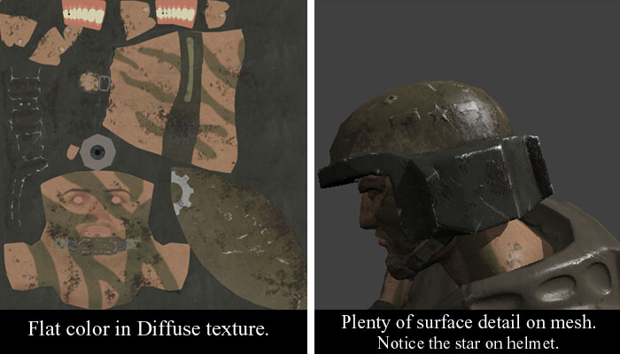
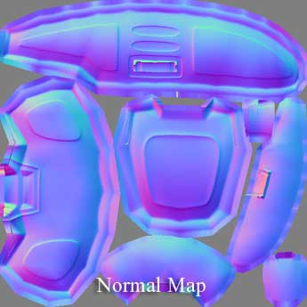

UDN
Search public documentation:
CreatingTextures
日本語訳
中国翻译
한국어
Interested in the Unreal Engine?
Visit the Unreal Technology site.
Looking for jobs and company info?
Check out the Epic games site.
Questions about support via UDN?
Contact the UDN Staff
中国翻译
한국어
Interested in the Unreal Engine?
Visit the Unreal Technology site.
Looking for jobs and company info?
Check out the Epic games site.
Questions about support via UDN?
Contact the UDN Staff
UE3 Home > Materials & Textures > Creating Textures
UE3 Home > Texture Artist / Character Artist / Environment Artist > Creating Textures
UE3 Home > Texture Artist / Character Artist / Environment Artist > Creating Textures
Creating Textures
Overview
Bump Maps
Using Diffuse for Color, not Shading
In the past, a good texture map would need to provide a convincing illusion of depth. Wrinkles in clothing, bolts in machinery--these details were too fine to waste polygons modeling them (in most cases they still are) so they would be painted in and clever use of painted shadows and highlights would give them the illusion of three-dimensionality. In Unreal Engine 3, bump-mapping adds a good deal of this lighting detail to your material. As a result, there is less need for painted-in shading in your diffuse texture. You may find that your diffuse texture becomes nothing but flat color while you depend upon your bump map for these fine surface details. This is especially true of Spherical Harmonic maps, which provide self-shadowing bumps. Below you see the diffuse texture of a soldier's head and the resulting material in Unreal Engine 3. The diffuse texture is completely devoid of shading information. All shading is rendered using the normal map.  You will notice that the helmet has scars and bumps that exist solely in the bump map. Notice the raised star emblem also. No highlight or shadow exist for it in the diffuse map.Normal Maps
Using the Normal Map in Photoshop
If, while you are creating a diffuse map, you find yourself having a hard time visualizing the final product (the diffuse in combination with bump-mapping) you might want to try this technique: - Paste your normal map into a new layer, on top of the layer stack.
- Desaturate it.
- Set the layer blending type to Multiply.
- Now tweak the Opacity if you wish.
Shade Maps
Create a Shade Map
3D Studio Max
See the Creating Shade Maps page for more information.SHTools
- Copy your .SHM to the directory in which your SHTools are located (probably c:\SHTools\Bin ).
- Open a command line (DOS window) and navigate to that directory.
- Type the following: MeshProcess CreateShadeMap "input.SHM" "output.TGA"
Shade Maps using Mental Ray Ambient Occlusion
An easy and excellent way to create a shade map is through the ambient occlusion shader via mental ray. Apply the shader to the diffuse input of the model and set the material to be 100% self-illuminating. Ambient occlusion, sometimes referred to as "dirtmap", does not need any lights and creates perfectly non-directional shading. Make sure your renderer is set to mental ray, otherwise the shader will not be exposed.Apply a Shade Map
Now that you have your shade map, you can then past this into your diffuse map using the same process described above with normal maps:- Paste shade map into a new Photoshop layer at top of layer stack.
- Set layer blending to Multiply.
- Adjust opacity as desired.